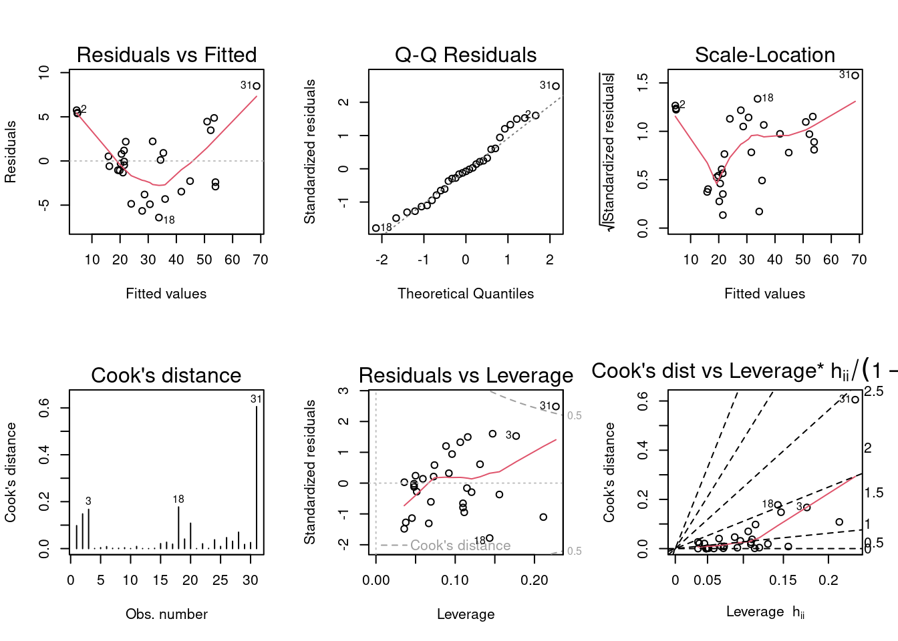

Code
knitr::opts_chunk$set(echo = TRUE, warning = FALSE)knitr::opts_chunk$set(echo = TRUE, warning = FALSE)DACSS 603, Spring 2023
# Loading packages
suppressPackageStartupMessages(library(dplyr))
suppressPackageStartupMessages(library(tidyverse))
library(formattable)
suppressPackageStartupMessages(library(kableExtra))
library(ggplot2)
suppressPackageStartupMessages(library(alr4))
suppressPackageStartupMessages(library(smss))
suppressPackageStartupMessages(library(broom))Question 1 (Data file: house.selling.price.2 from smss R package) For the house.selling.price.2 data the tables below show a correlation matrix and a model fit using four predictors of selling price.
(Hint 1: You should be able to answer A, B, C just using the tables below, although you should feel free to load the data in R and work with it if you so choose. They will be consistent with what you see on the tables.
(Hint 2: The p-value of a variable in a simple linear regression is the same p-value one would get from a Pearson’s correlation (cor.test). The p-value is a function of the magnitude of the correlation coefficient (the higher the coefficient, the lower the p-value) and of sample size (larger samples lead to smaller p-values). For the correlations shown in the tables, they are between variables of the same length.)
data("house.selling.price.2")
house <- house.selling.price.2
house <- rename(house, price = P
, size = S
, beds = Be
, baths = Ba
)
str(house)'data.frame': 93 obs. of 5 variables:
$ price: num 48.5 55 68 137 309.4 ...
$ size : num 1.1 1.01 1.45 2.4 3.3 0.4 1.28 0.74 0.78 0.97 ...
$ beds : int 3 3 3 3 4 1 3 3 2 3 ...
$ baths: int 1 2 2 3 3 1 1 1 1 1 ...
$ New : int 0 0 0 0 1 0 0 0 0 0 ...Correlation Matrix:
# Cor Matrix
cor_matrix <- cor(house[, c("price", "size", "beds", "baths", "New")], use = "complete.obs")
round(cor_matrix, 2) price size beds baths New
price 1.00 0.90 0.59 0.71 0.36
size 0.90 1.00 0.67 0.66 0.18
beds 0.59 0.67 1.00 0.33 0.27
baths 0.71 0.66 0.33 1.00 0.18
New 0.36 0.18 0.27 0.18 1.00Regression model:
# Fit a multiple regression model with predictor variables
lm.model1 <- lm(price ~ size + beds + baths + New, data = house)
summary(lm.model1)
Call:
lm(formula = price ~ size + beds + baths + New, data = house)
Residuals:
Min 1Q Median 3Q Max
-36.212 -9.546 1.277 9.406 71.953
Coefficients:
Estimate Std. Error t value Pr(>|t|)
(Intercept) -41.795 12.104 -3.453 0.000855 ***
size 64.761 5.630 11.504 < 2e-16 ***
beds -2.766 3.960 -0.698 0.486763
baths 19.203 5.650 3.399 0.001019 **
New 18.984 3.873 4.902 4.3e-06 ***
---
Signif. codes: 0 '***' 0.001 '**' 0.01 '*' 0.05 '.' 0.1 ' ' 1
Residual standard error: 16.36 on 88 degrees of freedom
Multiple R-squared: 0.8689, Adjusted R-squared: 0.8629
F-statistic: 145.8 on 4 and 88 DF, p-value: < 2.2e-16With these four predictors,
A. For backward elimination, which variable would be deleted first? Why?
Number of bedrooms as is has the highest p-value.
B. For forward selection, which variable would be added first? Why?
Size as is has the lowest p-value.
C. Why do you think that BEDS has such a large P-value in the multiple regression model, even though it has a substantial correlation with PRICE?
When including other variables in the regression model, Beds lose predictability power for Price. Since Baths and Size are highly correlated to Price, they might be capturing part of the impact for Beds. In particular there is a high correlation between Size and Beds, so it might means multicollinearity.
D. Using software with these four predictors, find the model that would be selected using each criterion:
Let’s compare Model 1 (above) with a model excluding Beds:
# Fit a multiple regression model with predictor variables (-Beds)
lm.model2 <- lm(price ~ size + baths + New, data = house)
summary(lm.model2)
Call:
lm(formula = price ~ size + baths + New, data = house)
Residuals:
Min 1Q Median 3Q Max
-34.804 -9.496 0.917 7.931 73.338
Coefficients:
Estimate Std. Error t value Pr(>|t|)
(Intercept) -47.992 8.209 -5.847 8.15e-08 ***
size 62.263 4.335 14.363 < 2e-16 ***
baths 20.072 5.495 3.653 0.000438 ***
New 18.371 3.761 4.885 4.54e-06 ***
---
Signif. codes: 0 '***' 0.001 '**' 0.01 '*' 0.05 '.' 0.1 ' ' 1
Residual standard error: 16.31 on 89 degrees of freedom
Multiple R-squared: 0.8681, Adjusted R-squared: 0.8637
F-statistic: 195.3 on 3 and 89 DF, p-value: < 2.2e-16Model 1 (all variables):
glance(lm.model1) %>%
dplyr::select(r.squared, adj.r.squared, AIC, BIC)# A tibble: 1 × 4
r.squared adj.r.squared AIC BIC
<dbl> <dbl> <dbl> <dbl>
1 0.869 0.863 791. 806.#PRESS
pr <- resid(lm.model1)/(1 - lm.influence(lm.model1)$hat)
sum(pr^2)[1] 28390.22Model 2 (excluding Beds):
glance(lm.model2) %>%
dplyr::select(r.squared, adj.r.squared, AIC, BIC)# A tibble: 1 × 4
r.squared adj.r.squared AIC BIC
<dbl> <dbl> <dbl> <dbl>
1 0.868 0.864 789. 802.#PRESS
pr2 <- resid(lm.model2)/(1 - lm.influence(lm.model2)$hat)
sum(pr2^2)[1] 27860.05E. Explain which model you prefer and why.
I prefer Model 2 it keeps the explanation power while simpler.
Question 2 (Data file: trees from base R)
data("trees")
str(trees)'data.frame': 31 obs. of 3 variables:
$ Girth : num 8.3 8.6 8.8 10.5 10.7 10.8 11 11 11.1 11.2 ...
$ Height: num 70 65 63 72 81 83 66 75 80 75 ...
$ Volume: num 10.3 10.3 10.2 16.4 18.8 19.7 15.6 18.2 22.6 19.9 ...From the documentation:
“This data set provides measurements of the diameter, height and volume of timber in 31 felled black cherry trees. Note that the diameter (in inches) is erroneously labeled Girth in the data. It is measured at 4 ft 6 in above the ground.”
Tree volume estimation is a big deal, especially in the lumber industry. Use the trees data to build a basic model of tree volume prediction. In particular,
A. Fit a multiple regression model with the Volume as the outcome and Girth and Height as the explanatory variables
lm.model3 <- lm(Volume ~ Girth + Height, data = trees)
summary(lm.model3)
Call:
lm(formula = Volume ~ Girth + Height, data = trees)
Residuals:
Min 1Q Median 3Q Max
-6.4065 -2.6493 -0.2876 2.2003 8.4847
Coefficients:
Estimate Std. Error t value Pr(>|t|)
(Intercept) -57.9877 8.6382 -6.713 2.75e-07 ***
Girth 4.7082 0.2643 17.816 < 2e-16 ***
Height 0.3393 0.1302 2.607 0.0145 *
---
Signif. codes: 0 '***' 0.001 '**' 0.01 '*' 0.05 '.' 0.1 ' ' 1
Residual standard error: 3.882 on 28 degrees of freedom
Multiple R-squared: 0.948, Adjusted R-squared: 0.9442
F-statistic: 255 on 2 and 28 DF, p-value: < 2.2e-16B. Run regression diagnostic plots on the model. Based on the plots, do you think any of the regression assumptions is violated?
par(mfrow = c(2,3))
plot(lm.model3, which = 1:6)
Yes, there is a violation of one assumption.There is Heteroskedasticity, the variance is not constant. We can see that red line with almost a funnel shape in the residual vs fitted graph and the trend line in the scale-location graph.
Question 3
(Data file: florida in alr R package)
In the 2000 election for U.S. president, the counting of votes in Florida was controversial. In Palm Beach County in south Florida, for example, voters used a so-called butterfly ballot. Some believe that the layout of the ballot caused some voters to cast votes for Buchanan when their intended choice was Gore.
The data has variables for the number of votes for each candidate—Gore, Bush, and Buchanan.
data("florida")
florida Gore Bush Buchanan
ALACHUA 47300 34062 262
BAKER 2392 5610 73
BAY 18850 38637 248
BRADFORD 3072 5413 65
BREVARD 97318 115185 570
BROWARD 386518 177279 789
CALHOUN 2155 2873 90
CHARLOTTE 29641 35419 182
CITRUS 25501 29744 270
CLAY 14630 41745 186
COLLIER 29905 60426 122
COLUMBIA 7047 10964 89
DADE 328702 289456 561
DE SOTO 3322 4256 36
DIXIE 1825 2698 29
DUVAL 107680 152082 650
ESCAMBIA 40958 73029 504
FLAGLER 13891 12608 83
FRANKLIN 2042 2448 33
GADSDEN 9565 4750 39
GILCHRIST 1910 3300 29
GLADES 1420 1840 9
GULF 2389 3546 71
HAMILTON 1718 2153 24
HARDEE 2341 3764 30
HENDRY 3239 4743 22
HERNANDO 32644 30646 242
HIGHLANDS 14152 20196 99
HILLSBOROUGH 166581 176967 836
HOLMES 2154 4985 76
INDIAN RIVER 19769 28627 105
JACKSON 6868 9138 102
JEFFERSON 3038 2481 29
LAFAYETTE 788 1669 10
LAKE 36555 49963 289
LEE 73560 106141 305
LEON 61425 39053 282
LEVY 5403 6860 67
LIBERTY 1011 1316 39
MADISON 3011 3038 29
MANATEE 49169 57948 272
MARION 44648 55135 563
MARTIN 26619 33864 108
MONROE 16483 16059 47
NASSAU 6952 16404 90
OKALOOSA 16924 52043 267
OKEECHOBEE 4588 5058 43
ORANGE 140115 134476 446
OSCEOLA 28177 26216 145
PALM BEACH 268945 152846 3407
PASCO 69550 68581 570
PINELLAS 199660 184312 1010
POLK 74977 90101 538
PUTNAM 12091 13439 147
ST. JOHNS 19482 39497 229
ST. LUCIE 41559 34705 124
SANTA ROSA 12795 36248 311
SARASOTA 72854 83100 305
SEMINOLE 58888 75293 194
SUMTER 9634 12126 114
SUWANNEE 4084 8014 108
TAYLOR 2647 4051 27
UNION 1399 2326 26
VOLUSIA 97063 82214 396
WAKULLA 3835 4511 46
WALTON 5637 12176 120
WASHINGTON 2796 4983 88A. Run a simple linear regression model where the Buchanan vote is the outcome and the Bush vote is the explanatory variable. Produce the regression diagnostic plots.
lm.model4 <- lm(Buchanan ~ Bush, data = florida)
summary(lm.model4)
Call:
lm(formula = Buchanan ~ Bush, data = florida)
Residuals:
Min 1Q Median 3Q Max
-907.50 -46.10 -29.19 12.26 2610.19
Coefficients:
Estimate Std. Error t value Pr(>|t|)
(Intercept) 4.529e+01 5.448e+01 0.831 0.409
Bush 4.917e-03 7.644e-04 6.432 1.73e-08 ***
---
Signif. codes: 0 '***' 0.001 '**' 0.01 '*' 0.05 '.' 0.1 ' ' 1
Residual standard error: 353.9 on 65 degrees of freedom
Multiple R-squared: 0.3889, Adjusted R-squared: 0.3795
F-statistic: 41.37 on 1 and 65 DF, p-value: 1.727e-08par(mfrow = c(2,3))
plot(lm.model4, which = 1:6)
Is Palm Beach County an outlier based on the diagnostic plots? Why or why not?
Yes Palm Beach is an outliner. It stands out from the basic random pattern of residuals as we can see in the residual vs fitted plot. Also, in the Normal Q-Q plot, we can see how Palm Beach falls far from the red line.
B. Take the log of both variables (Bush vote and Buchanan Vote) and repeat the analysis in (A.) Does your findings change?
lm.model5 <- lm(log(Buchanan) ~ log(Bush), data = florida)
summary(lm.model5)
Call:
lm(formula = log(Buchanan) ~ log(Bush), data = florida)
Residuals:
Min 1Q Median 3Q Max
-0.96075 -0.25949 0.01282 0.23826 1.66564
Coefficients:
Estimate Std. Error t value Pr(>|t|)
(Intercept) -2.57712 0.38919 -6.622 8.04e-09 ***
log(Bush) 0.75772 0.03936 19.251 < 2e-16 ***
---
Signif. codes: 0 '***' 0.001 '**' 0.01 '*' 0.05 '.' 0.1 ' ' 1
Residual standard error: 0.4673 on 65 degrees of freedom
Multiple R-squared: 0.8508, Adjusted R-squared: 0.8485
F-statistic: 370.6 on 1 and 65 DF, p-value: < 2.2e-16par(mfrow = c(2,3))
plot(lm.model5, which = 1:6)
Yes, it make a correction of the model to make more precise but Palm Beach is still an outliner affecting the model along with other outliners like Calhoun and Collier.